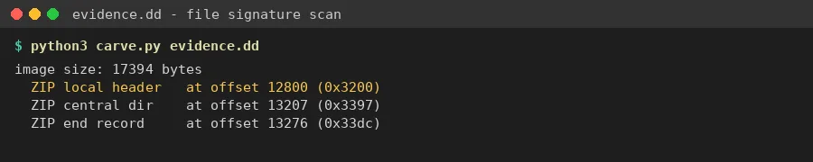
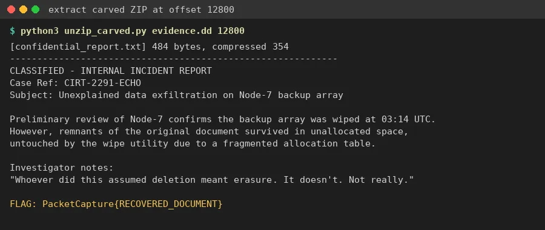

01Start point: evidence.dd (17 KB disk image).
- What I found: almost all high-entropy noise with no filesystem structure, which is what a wiped or damaged volume looks like.
- Thinking: when the filesystem is gone, ignore it and carve by file signature.
02Pivot: carving for signatures.
- What I did: searched the raw bytes for common magic numbers.
- Result: a ZIP local file header (PK\x03\x04) at offset 12800 (0x3200). Its central directory and end record (PK\x01\x02 / PK\x05\x06) are intact right after, so the archive is complete.
- It holds one file: confidential_report.txt (484 bytes, deflate).

03Extraction.
- What I did: opened the ZIP from that offset with Python's zipfile and read the file.
- Result: "CLASSIFIED - INTERNAL INCIDENT REPORT, Case Ref: CIRT-2291-ECHO". The report says the Node-7 backup array was wiped at 03:14 UTC, but remnants "survived in unallocated space". The last line is FLAG: PacketCapture{RECOVERED_DOCUMENT}
